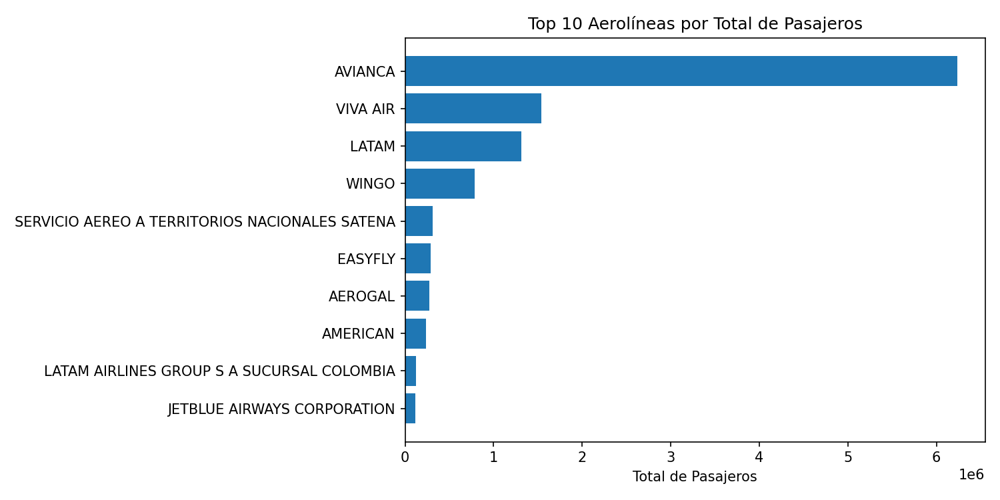
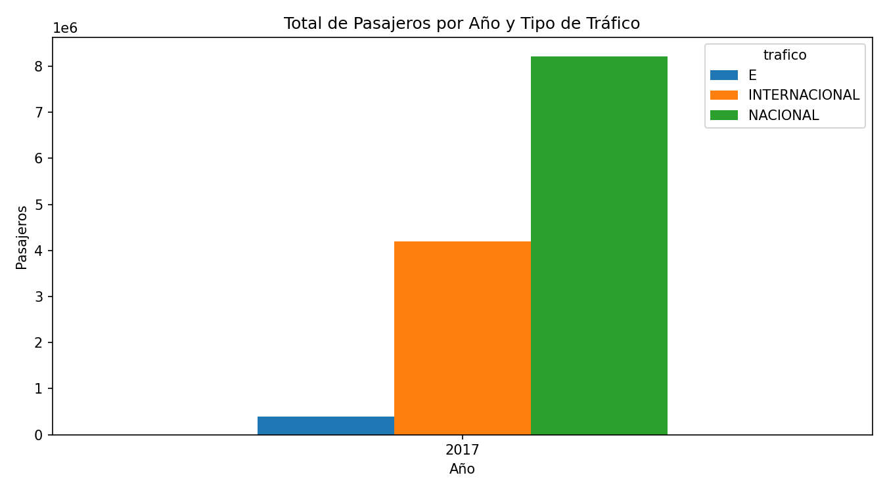
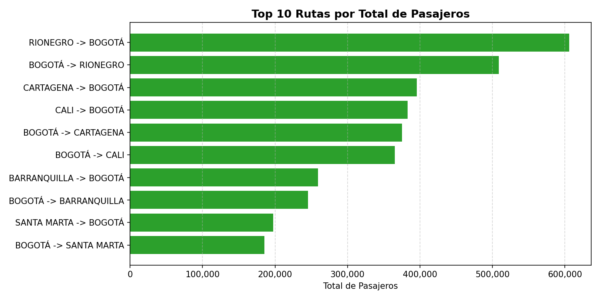

Tablero Analítico: Operaciones Aéreas en Colombia
Fuente:
Datos Abiertos Colombia (datos.gov.co - Aerocivil, API Socrata) |
Fecha de corte:
2026-11-23 21:56
Total de pasajeros analizados en la muestra:
12,800,760
1. Top 10 Aerolíneas por Pasajeros

2. Pasajeros por Año y Tipo de Tráfico

3. Top 10 Rutas por Pasajeros
